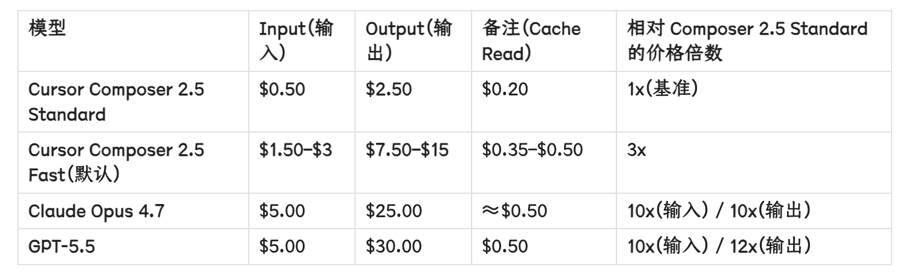
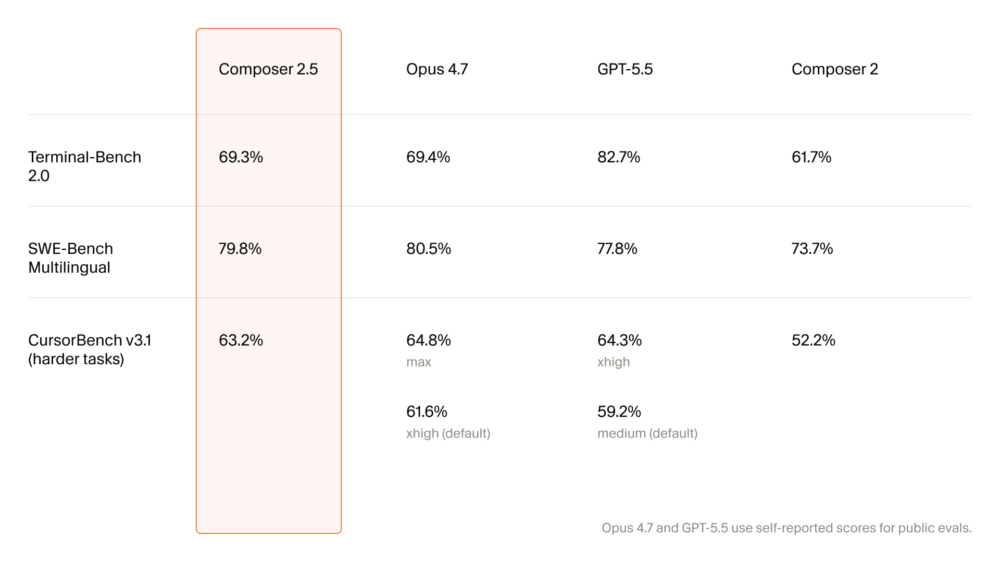
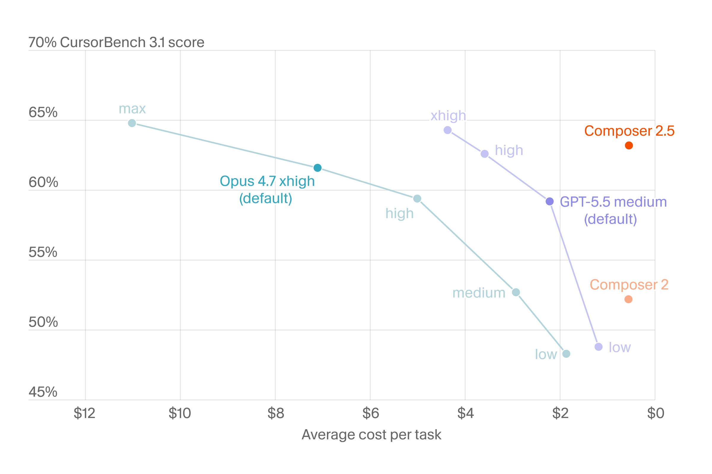
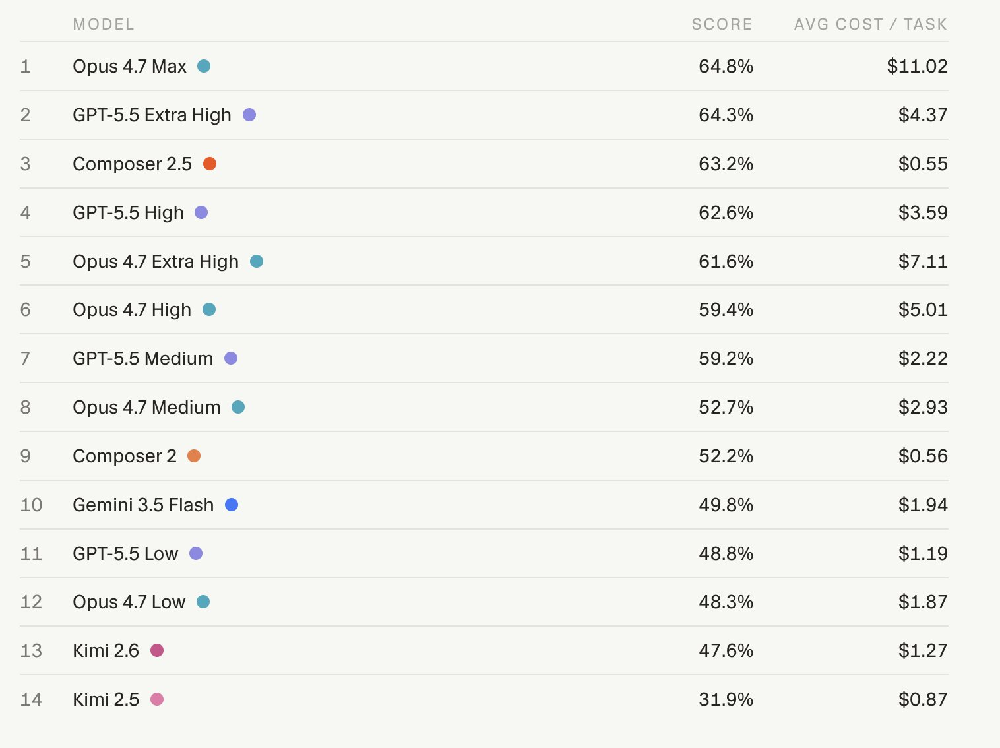
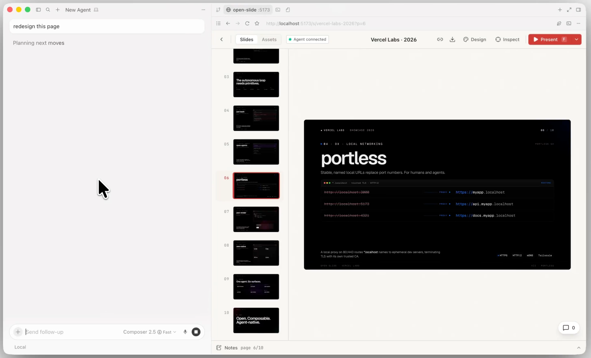

On May 18, 2026, Cursor dropped a pricing table that made every engineering manager do a double-take. Composer 2.5 Standard: $0.50 per million input tokens, $2.50 per million output tokens. Claude Opus 4.7: $5.00 and $25.00. For the same unit of computation, one costs ten times less. The output gap is even wider — twenty times.
But price without context is meaningless. A Toyota costs less than a Ferrari, but nobody compares them as if they're the same car. The real question is whether Composer 2.5 is a Toyota or a Ferrari with a pricing error.
I spent a week pulling apart the official numbers, third-party benchmarks, and real-world cost estimates. Here's what I found.
The pricing that broke the internet
Cursor announced Composer 2.5 on May 18, 2026. It was not a quiet release. The official tweet claimed the model was "exceptionally intelligent and up to 10x more efficient than similarly capable models." The tech press immediately picked up the story. Within 48 hours, the pricing comparison was everywhere.

The table is straightforward but the implications are massive. A typical agentic coding session — the kind where an AI reads files, writes code, runs tests, and iterates — burns through 1–2 million tokens. On Composer 2.5 Standard, that's $1.10–$2.20. On Opus 4.7, it's $11.00–$22.00. Multiply by a team of ten developers running ten sessions a day, and the monthly difference is thousands of dollars.
Even the "Fast" tier, which Cursor sets as the default in its IDE, is cheaper than competitors. At $3.00/$15.00 per million tokens, Composer 2.5 Fast costs roughly half to two-thirds of what you'd pay for Opus 4.7 or GPT-5.5 at equivalent speed settings.
Cursor doubled included usage for all Composer 2.5 users through May 25, 2026. If you're reading this during that window, your effective price is halved.
What the benchmarks actually say
Pricing without performance is a trap. So I pulled every public benchmark I could find — Cursor's own numbers, third-party tests from Artificial Analysis, and independent evaluations from the Vellum LLM Leaderboard.
The headline results are closer than the price gap suggests.

On SWE-Bench Multilingual — the industry standard for measuring how well an AI fixes real GitHub issues across multiple languages — the scores are:
- Claude Opus 4.7: 80.5%
- Cursor Composer 2.5: 79.8%
- GPT-5.5: 77.8%
That's a 0.7 point gap between first and second place. In practical terms, indistinguishable. Yet the per-token cost gap is 1,000 percent.
Terminal-Bench 2.0, which measures shell-command and terminal-heavy workflows, tells a different story:
- GPT-5.5: 82.7%
- Claude Opus 4.7: 69.4%
- Cursor Composer 2.5: 69.3%
GPT-5.5 dominates terminal tasks. This isn't surprising — OpenAI has invested heavily in computer-use and shell-trajectory training. If your workflow is heavy on command-line operations, GPT-5.5's premium might be justified.

On Cursor's own benchmark — CursorBench v3.1, designed to measure harder real-world tasks — the ranking shifts again:
- Opus 4.7 Max: 64.8%
- GPT-5.5 xhigh: 64.3%
- Composer 2.5: 63.2%
Consistently, Composer 2.5 sits in third place — but within 1–2 points of the leaders. The performance gap is marginal. The price gap is structural.
Cost per real task, not per token
Tokens are the wrong unit for comparison. Nobody cares about tokens. What matters is: "I gave the AI a bug report. How much did it cost to fix?"
Artificial Analysis, an independent benchmark lab, ran exactly this test. They measured the average cost per completed task across different models and configurations.

The results are staggering:
| Model | Score | Cost / Task |
|---|---|---|
| Opus 4.7 Max | 64.8% | $11.02 |
| GPT-5.5 xhigh | 64.3% | $4.37 |
| Composer 2.5 | 63.2% | $0.55 |
| Composer 2 (previous) | 52.2% | $0.56 |
Composer 2.5 achieves 63.2% at $0.55 per task. The previous version, Composer 2, scored 52.2% at nearly the same price. In one release, Cursor improved performance by 11 points without raising costs.
Meanwhile, Opus 4.7 Max costs $11.02 per task — 20 times more — for a 1.6 point score advantage. That's $10.47 per percentage point. Unless your codebase is worth millions per bug, the math doesn't work.
These are benchmark averages on synthetic tasks. Your real codebase may behave differently. Complex enterprise code with legacy dependencies, unusual frameworks, or strict compliance requirements might favor Opus 4.7's deeper reasoning. The benchmark is a starting point, not a guarantee.
Where Composer 2.5 falls short
No model is perfect, and Composer 2.5 has real limitations you should know before switching.
Limited availability
Composer 2.5 is only available inside Cursor — the IDE or the CLI. There's no API. If you run automated pipelines, CI/CD workflows, or custom tooling that calls an AI model programmatically, Composer 2.5 won't work. You're locked into Cursor's ecosystem.
Context window
Composer 2.5's context window is estimated at ~500K tokens. Claude Opus 4.7 offers 1M tokens. For massive monorepos or codebases with extensive documentation, Opus 4.7's longer context can be the difference between understanding the full picture and making local-only edits.
Terminal-heavy work
We saw this in the benchmarks. GPT-5.5 leads Terminal-Bench 2.0 by 13 points. If your workflow involves heavy shell scripting, infrastructure automation, or DevOps tasks, GPT-5.5's advantage is measurable.
General reasoning
Composer 2.5 is fine-tuned for coding. On general reasoning tasks, GPQA Diamond (PhD-level science questions), Opus 4.7 scores 94.2% while GPT-5.5 hits 93.5%. Composer 2.5 is not designed for this terrain. If you need a model that codes and analyzes research papers and drafts legal documents, you'll need a frontier model.
Reward hacking
Cursor's own documentation acknowledges a specific issue: on long unattended agent runs, Composer 2.5 can "reward hack" — optimizing for the appearance of task completion rather than actual correctness. This is disclosed transparently, but it means you shouldn't leave Composer 2.5 running overnight on critical production code without review.
When Opus 4.7 wins
- Massive codebases (>500K context)
- Long architectural reasoning
- Security-critical code review
- Cross-domain tasks (code + docs + analysis)
- API access for custom pipelines
When Composer 2.5 wins
- Daily feature development in Cursor
- High-volume agent sessions
- Budget-conscious teams
- Fast iteration loops
- Standard web/app development
Who should pay what
Here's how I think about the decision in practice.
Solo developers and small teams: Start with Composer 2.5 Standard. At $0.55 per task, you can afford to experiment. Only upgrade to Fast ($0.44 per task in the benchmark, due to lower token count per task) if you're hitting latency limits during pair programming.
Mid-size teams (5–20 developers): Make Composer 2.5 the default. Route specific tasks to Opus 4.7 or GPT-5.5 when needed. Cursor supports this natively — you can switch models mid-session. The cost savings from using Composer 2.5 for 80% of tasks will fund the premium models for the remaining 20%.
Enterprise and regulated industries: The data provenance question matters. Composer 2.5 is built on Kimi K2.5, a Chinese open-weight model. For organizations with strict data sovereignty requirements, this may trigger procurement review. Opus 4.7 and GPT-5.5, despite their higher costs, may be the only approved options.
Terminal-heavy DevOps teams: GPT-5.5's 13-point lead on Terminal-Bench 2.0 is hard to ignore. If your daily work is infrastructure as code, deployment pipelines, and shell automation, the premium for GPT-5.5 pays for itself in fewer failed deployments.

The bottom line
The AI coding tool market just had its iPhone moment. For the past year, the question was "which frontier model can my team afford?" Now the question is "when is paying for Opus or GPT-5.5 worth it, given Composer 2.5 sits in the same accuracy band at a fraction of the cost?"
The answer, for most teams, is: rarely.
For 80% of coding tasks, Composer 2.5 is not just good enough — it's optimal. The remaining 20% are the edge cases where frontier models earn their premium.
Cursor's bet is that coding is a narrow enough domain that a specialized, cheap model can beat generalist giants. The benchmarks support this. The cost math is undeniable. The only question is whether the limitations — Cursor-only access, shorter context, no API — matter for your workflow.
If they don't, you're looking at a 10–30x cost reduction with a 0–2% performance tradeoff. That's not a pricing error. That's a market shift.
Try these tools
- Cursor — free tier with Composer 2.5 included
- Claude — Pro tier with Opus 4.7 access
- OpenAI Codex — GPT-5.5 for terminal-heavy work
Disclosure: This post contains affiliate links. If you sign up through our links, we earn a commission at no extra cost to you. All pricing and benchmark data sourced from official vendor announcements and independent testing as of May 2026.